|
|
| 00 | 01 | 02 | 03 | 04 | 05 | 06 | 07 | 08 | 09 | 10 | 11| 12 | 13 | 14 | 15 | 16 | 17 | 18 | 19 | 20 | 21 | 22 | 23 | 24 | 25 | 26 | 27 | 28 | 29 | 30 | 31 | 32 | 33 | 34 |
QUARKS
|
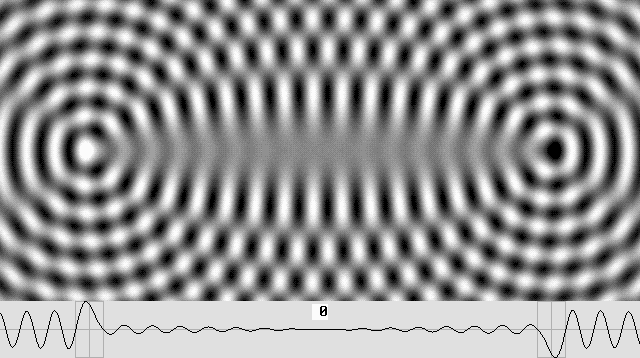 |
A quark is an electron pair containing a gluonic field whose phase in the center is pi / 2 shifted.
The pi / 2 phase shift is that of a positron; it allows it to hide inside a neutron and produce a proton.
|
This is only an hypothesis ! The quark is surely a wave system with an additional field of force. However, the correct structure is still to be demonstrated. |
THREE QUARKS, OR MAYBE JUST SIX ELECTRONS.
|
What are we looking for? The goal is to find what is a "quark". We know that three quarks may produce a proton or a neutron. This is what Murray Gell-Mann discovered. Because there are "up" and "down" quarks, they should be slightly different. So we are looking for three quarks, albeit one must realize that most observations on quarks appear quite fuzzy. One cannot truly observe quarks because observations are limited and sometimes misleading. And what's more, it is impossible to observe a stand alone quark because it becomes highly unstable. Honestly, there could be no quarks at all, but rather a rather simple wave structure which seems to contain three quarks.
According to the Wave Mechanics, fast moving electrons or positrons can produce two or more quark pairs because of the resulting gluonic field ability to attract additional positrons or electrons in the vicinity. However, quarks are unstable because this attraction effect may also cause their destruction. Quarks did not exist in the beginning of times. After an hypothetic and revisited Big Bang, when there was nothing but the aether filled up with waves, a large number of electrons and positrons had to be be created out of incoming waves. Then, because the synchronization process is impossible in the absence of matter, there was no fundamental difference between them. No synchronized spin, just randomly distributed phases. So the attraction effect between electrons and positrons produced a lot of quark pairs. Although three quarks coming close together before disintegrating was less likely to happen, they could still join together occasionally to become a neutron and, finally, a stable proton. Just concentric wave diagrams. Moving matter behaves exactly as though it was perfectly at rest with respect to the aether. Then the electron waves become apparently concentric, ruling out the Doppler effect in accordance with the Lorentz transformations. So this page shows only concentric, hence much simpler wave diagrams. The lambda / 2 phase shift. The electron central antinode is one wavelength wide instead of the lambda / 2 antinode which is common for all standing waves. This produces a lambda / 2 phase shift between two opposite wave parts. This is of the utmost importance. Most diagrams showing interferences between two or more emitters do not apply to matter waves. Thus, before observing more complicated diagrams, one should realize that waves emitted toward opposite directions are lambda / 2 shifted. They are lambda / 4 shifted with respect to the center. This should be clearly visible on the following diagrams: |
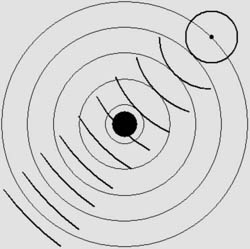
The phase no longer coincides beyond the center.
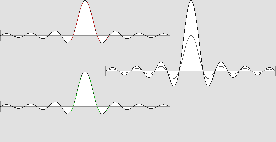
The electron core is one wavelength wide.
So two opposite peaks are distant by an additional half wavelength.
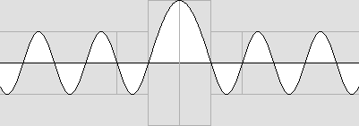
The electron pulsates lambda / 4 shifted waves with respect to the center.
|
Electrostatic forces. The page on wave mechanics shows that electrostatic forces appear between two electrons or positrons while they are relatively far apart. Then their standing wave system is weaker and the wavelets which they constantly emit meet, producing a very special set of plane standing waves on the axis. Then those standing waves are amplified by aether waves and the energy is radiated along the axis toward both particles, creating a repulsion effect. Moreover, when the waves are out of phase beyond both electrons, they destroy themselves and allow the inner waves to push both electrons from each other. This does not occur between an electron and a positron, and so they are attracted instead. Most wave diagrams show compressed zones in white and dilated ones in black, allowing any intermediate gray shade. However, this method cannot show the zero-energy zones because they are then represented by a medium gray. So I had to oblige the computer to darken those zones to black instead, making the diagrams much more revealing. Moreover, there are billions of wavelengths between those electrons and one simply cannot show them all. So the diagrams will show only a small number of waves. Let's repeat that we are speaking about electrostatic charges here. Then the so-called "in-waves" are absent and the electron is shown as a pulsating wave centre only. There are no standing waves: just outward waves whose energy fades out according to the normal square of the distance law. Observe that while the distance between two electrons is an integer multiple of the wavelength, the waves are adding themselves beyond each electron. |
Please click on the image (+Shift) for the animated diagram (1.77 MB).
Distance : any wavelength multiple integer (very long distance).
This diagram does not involve spherical standing waves. Just outwards traveling waves.
Those waves add themselves beyond each electron.
This produces an electrostatic field, not a quark, because the spherical standing waves are absent.
Please click on the image (+Shift) for the animated diagram (1.73 MB)
Distance : any wavelength multiple integer plus one half (very long distance).
Now the traveling waves are destroying themselves beyond each electron.
The plane standing wave set in the center is still present as a repulsive electrostatic field.
|
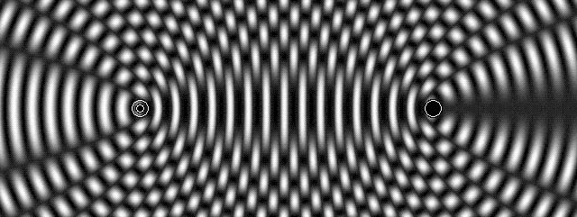 |
Here, the waves from an electron and a positron produce an axial asymmetry (not animated).
The on-axis waves are adding themselves on the left, but they destroy themselves on the right.
This situation may differ according to the spin and/or the distance.
It leads to a magnetic field because there are two poles.
Up to now, I could not determine whether the north pole is on the left or on the right.
|
Two electrons very close together. This situation is not likely to happen because of the strong repulsion effect. The animation below shows two electrons from both spins (the phase is opposite). For very short distances, the standing wave sets are present and they fully add themselves. This system cannot be a quark because it oscillates everywhere in the same phase. The central zone must rather oscillate in perfect quadrature, in other words according to the positron's phase. This is important because the proton (which contains three quarks) must accept this positron in its centre, making it positive. The strong set of plane standing waves on the axis between those electrons is absent while the distance is an extra lambda / 2 length (more or less). The same spin system leads to the opposite result. This indicates that two electrons can theoretically lock themselves in phase on each wavelength multiple. However this is an unstable condition because electrons are seldom perfectly immobile near one another, and because the repulsion effect is far much stronger most of the time. |
|
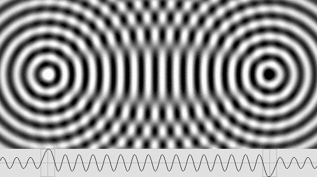 |
Here, two electrons whose spin is opposite are very close together.
The system may also be made up of two positrons and the spin may be the same.
PARTIALLY STANDING WAVES
|
According to my wave mechanics, the electron is a finite system. Its standing wave area is very small, but it constantly radiates waves which obey the normal square of the distance law. This means that for a given distance from the electron's core, say the proton's diameter (which equals about 100 million electron wavelengths according to the formula shown below), its standing waves gradually transform to partially standing waves. They finally transform to regular traveling waves. Those partially standing waves are well known. They produce a characteristic pea pod-like envelope. The important point is that, unlike regular standing waves, the waves' amplitude never reaches zero. So, they are "partially moving" like this: |
|
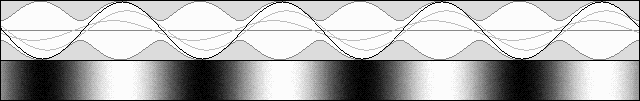 |
Partially standing waves.
|
It should be emphasized that a "true" electron is not a pure standing wave system. Because it constantly transfers energy from aether waves to spherical traveling out-waves, it is rather a partially standing wave system. This is important because it explains the neutron neutral charge and, in addition, the positron's amazing presence inside the proton. Here is my most recent view of an electron's waves. Observe that the pure standing waves around the core gradually transform to pure traveling waves with a transitory partially standing wave state between them. However, this diagram is a simplification. The correct one would show billions of wavelengths. |
|
|
The electron is primarily made of "partially standing waves".
Two such systems very close together will produce waves whose phase is lambda / 4 shifted.
This makes a quark containing a pi / 2 shifted gluonic field.
|
Partially standing waves can also be seen as a regular set of standard standing waves containing more waves in just one direction. The important difference is that two such sets adding themselves can produce standing waves whose phase is lambda / 4 shifted (pi / 2) like a positron. This pi / 2 phase shift was my main obstacle for months. I could not understand why the same nucleon particle (proton or neutron) could exist in those two different forms, one neutral and the other one positive. The so-called beta decay indicated that a proton should contain a hidden positron, but the existence of such an antiparticle inside it appeared unlikely to be possible. By the way, neutrinos from the same beta decay do not exist. The "creation" of this particle by Wolfgang Pauli and Enrico Fermi (from the Italian, neutrino means little neutral) reminds us of the photon, which does not exist either. They did not really detect this particle; they just wanted to explain the small energy difference, which is simply emitted as a wave beam. I show elsewhere that the Compton effect can be explained by such a wave beam for both photons and neutrinos. And so, one can postulate that while two electrons are some distance from one another, but not too distant, they become a quark containing a gluon, i.e. plane standing waves between them, whose phase is that of a positron. Then the whole system becomes neutral (no negative nor positive charge). In addition, three such quarks placed crosswise on the three Cartesian axes will become a neutron. Finally, this neutron with a positron in its center will become a proton. The next animated diagram shows a true quark. The waves placed in the middle of the system are lambda / 4 shifted. In other words, there is a pi / 2 phase shift on the axis. |
Now, this is a quark.
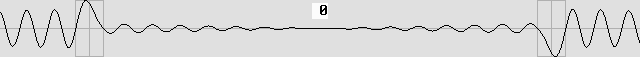
While the phase is worth lambda / 4 (here, 24 images / 4 = 6), the center amplitude reaches a maximum.
The distance between both electrons must be a multiple of the wavelength plus or minus lambda / 4.
The on-axis waves between those electrons are traveling towards the center.
They will "push" the positron towards the proton's center.
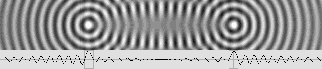
This quark is made of 2 electrons or two positrons from the same spin.
Those slightly different models (same spin, or both spins) could explain the "up" and "down" quarks.
A quark made of two positrons would be an "anti-quark".
Three anti-quarks would make an antiproton containing an electron at its center.
GLUONIC FIELDS
|
The very special electron tandem as a quark can simultaneously pulsate waves whose phase is that of the positrons and the electrons. This means that those waves can cancel the electrons' normal negative charge. The image No. 6 below was borrowed from the same animation shown above. The important point is that those waves are finally pi / 4 shifted and that they are emitted in all directions. This electron tandem cannot act and react like just one electron any more. It is neutral as compared to both electrons and positrons or protons, but it still has a phase, hence a "colour charge" as compared to other quarks. |
|
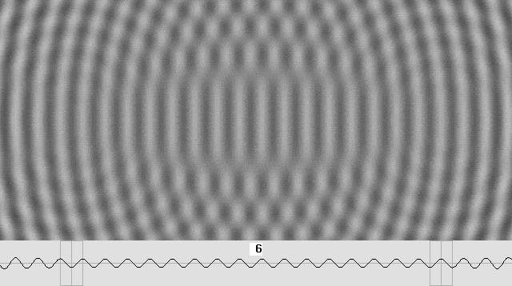 |
Here the gluonic field is shown before its amplification.
All those waves are pi / 4 shifted. They cancel the electron's negative charge.
|
The gluonic field round trip. The gluonic field is the on-axis standing waves set. It is the result of three steps because the waves must perform a round trip between the center and the external on-axis zone, and also because the additive result is finally amplified. This process explains why the neutron, which contains only 6 electrons, can nevertheless be 1838 times heavier then one electron. The diagram below shows that when the electron spin is the same, and also when they are distant by an integer multiple of the wavelength (this is a quark), the standing waves partially destroy themselves between them. Conversely, they partially add themselves beyond: |
|
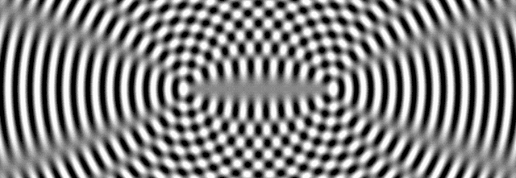 |
The on-axis waves beyond both electrons are mostly standing waves.
Such standing waves are amplified by aether waves.
So they radiate the resulting energy on both sides, hence one half goes back towards the center.
|
Half of the energy is returned towards the center. The diagram below shows that the standing waves on both sides are nearly concentric. In other words, their center of curvature is roughly the same and it is not that of the electrons any more. It is located between them in the middle of the quark. In accordance with Huygens' Principle, such curved standing waves should emit their energy as traveling waves on both sides, but just the amplified part. Because those standing waves are concave, they are like a telescope mirror and the traveling waves are focused towards the center. One can show in optics that this produces an "Airy disk", where the amplitude is very high. In addition, more waves are traveling towards the center from the opposite direction. So the two focused waves sets will add themselves and produce more standing waves in the center, which will add their energy to the already existing gluonic field. Then this high energy standing waves set will also be amplified by aether waves. Finally, all the on-axis space around both electrons will be filled with this "gluonic field". |
|
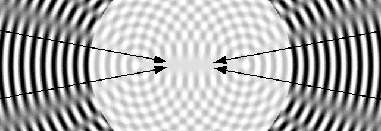 |
Those waves are nearly concentric.
Their centre of curvature is not that of the electrons any more.
In accordance with Huygens' Principle they should return half of their energy towards the centre.
|
Fresnel's square of the amplitude law. Augustin Fresnel discovered that wave energy is equal to the square of the amplitude. This law is well known but most scientists still do not understand it well. For instance a laser beam produces an Airy disk which is postulated to be the result of the addition of billions of wavelets originating from the laser surface. However, the wavelets energy decreases according to the also well known square of the distance law. So it becomes difficult to understand why the laser energy does not significantly decrease until the distance reaches the "junction point". The formula for this junction point is: L = D 2 / 2.44 l. For instance, the distance is 630 mm (about 2 feet for l = 0.00065) for a one millimeter aperture red laser. This happens because the waves emitted by two electrons will add their amplitude (1 + 1 = 2) while the energy will rather be the square of the total amplitude (2 times 2 = 4). The wave energy from 2 electrons will cancel when the phase is opposite but it will be squared while the phase is the same. Because the wave distribution is sinusoidal, this would normally end with a simple additive result but there is an unusual exception on the axis joining two electrons. The waves are always adding themselves there. They never cancel inside a space which is much wider than just one wavelength. This space is a "gluon", a gluonic field. According to Pythagoras, the gluonic field D transverse diameter up to a lambda / 4 phase is D = 2 SQRT( L) in wavelengths. It seems that the distance L between both electrons is about 100 million wavelengths, and this indicates that the gluonic field diameter could be worth 20000 electron wavelengths. So the gluonic field could be a very long 20,000 x 100,000,000 wavelengths prolate ellipsoid (cigar-shaped) area. Everywhere inside it, the energy is four times that of just one electron for the same area. The gluonic field also includes the standing waves beyond both electrons, and this space is even wider. All those standing waves must radiate their energy along the axis only. In other words, most of the quark mass is that of its gluonic field and most of this energy is radiated along the axis. So there should be a strong repulsion effect along the axis as a radiation pressure, and a strong transverse attraction effect as a shade effect. This page was written a long time ago: I must add here that according to new observations about the atomic structure, the electron distance inside the quark could be very small, about 10 to 100 wavelengths... The gluonic field amplification. On the one hand, the electron is a standing wave system which is amplified by aether waves as the result of a lens effect. On the other hand, this gluonic field is also made of standing waves. So it should also be amplified by aether waves. And unlike the electron, it does not contain a central antinode whose volume is very narrow. This volume imposes an amplification limit, and this limit is much larger in the case of the gluonic field. So the gluonic field is strongly amplified. The result should look like this: |
|
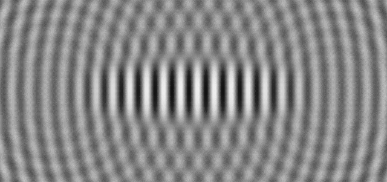 |
The cigar-shaped gluonic field after its amplification.
This is a simplification. The correct diagram would show about 100 million wavelengths.
In addition, the gluonic field also includes the lower amplitude standing waves beyond each electron.
|
More mass then 6 electrons. Finally, one should realize that a neutron containing only 6 electrons can nevertheless be 1838 times more massive then just one electron. There are three main and stronger "quark gluonic fields" inside a neutron, but the 6 electrons also produce 12 off-axis non-quark secondary gluonic fields. The volume formula for an ellipsoid is (4/3) p R1 R2 R3. Because the secondary gluonic fields length equals 1 / cos 45° = 1.414 times less that of the primary ones, their volume and probably their mass should be worth 2.828 times less. So they are about 3 times smaller. We have: (3 * x) + (12 * (x / 2.828)) = 1832 and so: x = 253 as the main gluonic field mass. Then the secondary gluonic fields mass should be worth 90 times the electron mass. Moreover, those gluonic fields are made of plane standing waves and most of the energy is radiated along the axis. Because they are amplified by aether waves, those aether waves are weakened and a shade effect must occur as an attraction effect. This phenomenon can "glue" three quarks (actually 6 electrons) together, hence the name "gluon". |
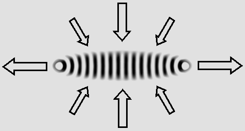
The gluon's attraction effect.
|
The gluonic beam diagram. The gluonic field beam wave diagram, to a first approximation, should be much similar to that of two electrons. The main difference is that it is a two-way focused beam instead of the electron's all-azimuth radiation. The computer shows that when those electrons are distant by many wavelengths, they produce along the axis a beam which contains many interleaved hyperboloids. The focused gluonic beam. However, because most of the gluonic field standing waves are plane ones, they should primarily radiate their energy on both sides along the axis. Any experienced optician would agree with that. The laser, which contains a great number of plane standing waves inside its Fabry-Perot cavity, also behaves this way; those systems produce a "wave beam": |
|
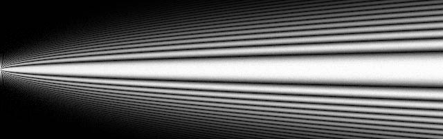 |
Any gluonic field radiates two such wave beams on both sides along the axis.
The beam energy is much more powerful than that of a single electron.
The electrons can move transversally in a circular motion inside those cylindrical interferences.
This explains light.
|
Interferences between two gluonic beams. The proton as a whole includes its 3 main quarks and its 12 secondary gluonic fields. It should radiate not less than 24 parallel beams along 12 axis, and six stronger and unique beams along the three Cartesian axes. Each gluonic beam already contains interferences which are hyperboloid. Because the proton produces parallel beams, the hyperboloids will cross themselves on secondary true hyperbolas (not hyperboloids). The result will appear different on two orthogonal planes. The first plane contains the gluonic fields. It shows that on-axis and off-axis interferences appear periodically. The on-axis interference on the right side is the last one. Its distance indicates the size of an atom, more exactly the distance between the proton and the second atomic layer. The second plane shows the same on-axis interferences from the transverse point of view. The off-axis interferences are similar but they are not visible. All those interferences are true hyperbolas, not hyperboloids. |
|
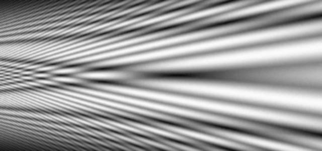 |
|
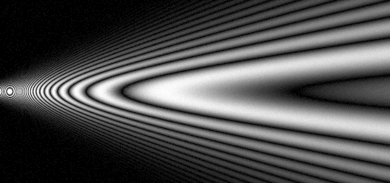 |
Hyperbolic interferences between two gluonic beams, from two orthogonal points of view.
Any of those hyperbolas can capture one electron in accordance with constant periodic distances.
The link with the periodic atomic shells and the Balmer series is obvious.
|
The "black funnels". And finally, the absence of those wave beams in 8 directions crossing the vertices of a cube will produce 8 stunning "black funnels". Those black funnels can capture electrons in a very aggressive way. They will explain not only the 8 peripheral electrons, but also chemical bindings, crystalline structures, electric current, semiconductors, superconductivity, etc. Let's examine this in the next page about protons. |
| 00 | 01 | 02 | 03 | 04 | 05 | 06 | 07 | 08 | 09 | 10 | 11| 12 | 13 | 14 | 15 | 16 | 17 | 18 | 19 | 20 | 21 | 22 | 23 | 24 | 25 | 26 | 27 | 28 | 29 | 30 | 31 | 32 | 33 | 34 |
|
|
Bois-des-Filion in Québec. Email Please read this notice. On the Internet since September 2002. Last update December 3, 2009. |

{kind=link}
{kind=link}